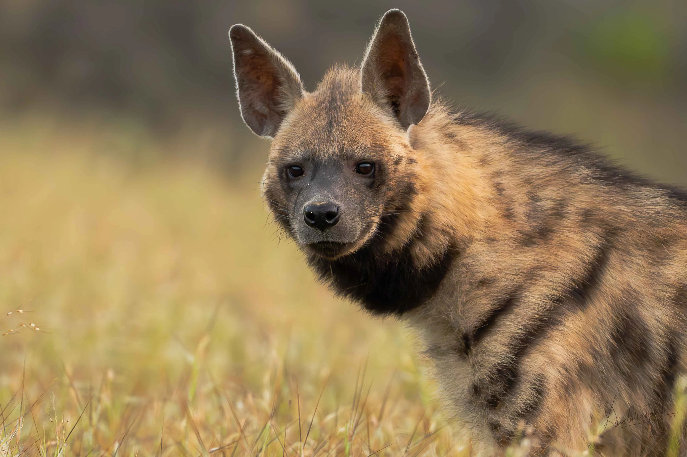

12 Jan 2026
Into the Wild: Stories Through the Lens Capturing Nature in Its Rawest Form
Wildlife photography is more than just pressing a shutter—it’s about patience, respect for nature, and waiting for the perfect moment when the wild reveals itself.
READ MORE →